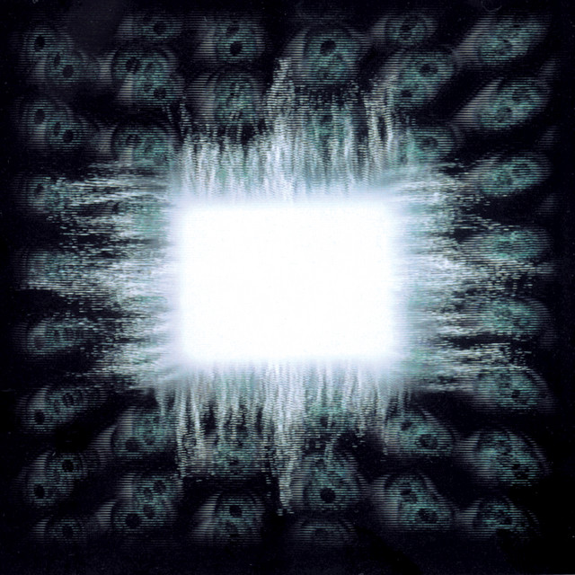

Reseña
¿Por qué Ænima sigue siendo un clásico imprescindible?
La mezcla de tensión, peso y atmósfera que propone Tool en este disco lo convierten en una pieza fundamental para cualquier colección.
Ver álbumes